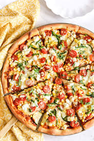

Welcome to Pizza Lovers!
Discover the recipes of amazing pizzas and make them at home!

Margherita Pizza
A classic Italian pizza with fresh tomatoes, mozzarella cheese, and basil.
See Recipe
Ingredients
- Pizza dough
- 1/2 cup crushed tomatoes (or pizza sauce)
- 8 oz fresh mozzarella (sliced)
- Fresh basil leaves
- 1–2 tbsp olive oil
- Salt to taste
Steps
- Preheat oven to 475°F (245°C) with a pizza stone/pan inside if you have one.
- Stretch dough into a circle and place on parchment.
- Spread tomatoes/sauce, add mozzarella, drizzle olive oil, and lightly salt.
- Bake 10–14 minutes until crust is golden and cheese is bubbly.
- Add basil after baking (or in the last 1–2 minutes) and serve.

Pepperoni Pizza
A delightful pizza topped with spicy pepperoni and mozzarella cheese.
See Recipe
Ingredients
- Pizza dough
- 1/2–3/4 cup pizza sauce
- 2 cups shredded mozzarella
- Pepperoni slices
- Optional: oregano, chili flakes
Steps
- Preheat oven to 475°F (245°C).
- Stretch dough and spread sauce evenly.
- Add mozzarella, then top with pepperoni.
- Bake 10–14 minutes until crisp and bubbly.
- Rest 2 minutes, slice, and enjoy.

Veggie Pizza
A colorful mix of bell peppers, onions, olives, and cheese on a crisp crust.
See Recipe
Ingredients
- Pizza dough
- 1/2–3/4 cup pizza sauce
- 2 cups shredded mozzarella
- Sliced bell peppers
- Sliced onions
- Olives
- Optional: mushrooms, spinach
Steps
- Preheat oven to 475°F (245°C).
- Stretch dough and add sauce.
- Add cheese, then veggies on top.
- Bake 10–14 minutes. If veggies release water, bake a little longer.
- Slice and serve.

Hawaiian Pizza
A sweet and savory pizza topped with pineapple, ham, and mozzarella cheese.
See Recipe
Ingredients
- Pizza dough
- 1/2–3/4 cup pizza sauce
- 2 cups shredded mozzarella
- Diced ham
- Pineapple chunks (pat dry)
Steps
- Preheat oven to 475°F (245°C).
- Stretch dough, spread sauce, add mozzarella.
- Add ham and pineapple (dry pineapple helps avoid soggy pizza).
- Bake 10–14 minutes until golden.
- Cool 2 minutes, slice, and eat.

BBQ Chicken Pizza
Smoky BBQ sauce, tender chicken, red onion, and melty cheese.
See Recipe
Ingredients
- Pizza dough
- 1/2 cup BBQ sauce (use as the base)
- 1 1/2–2 cups shredded mozzarella
- 1 cup cooked chicken (shredded or diced)
- Sliced red onion
- Optional: cilantro, cheddar, jalapeños
Steps
- Preheat oven to 475°F (245°C).
- Stretch dough and spread BBQ sauce as the base.
- Add cheese, then chicken and red onion.
- Bake 10–14 minutes until browned and bubbly.
- Top with cilantro after baking if you like.

Chicken Alfredo Pizza
Creamy Alfredo sauce, chicken, mozzarella, and optional spinach.
See Recipe
Ingredients
- Pizza dough
- 1/2–3/4 cup Alfredo sauce
- 1 1/2–2 cups shredded mozzarella
- 1 cup cooked chicken (sliced or diced)
- Optional: spinach, mushrooms, parmesan, garlic
Steps
- Preheat oven to 475°F (245°C).
- Stretch dough and spread Alfredo sauce.
- Add mozzarella, chicken, and optional toppings.
- Bake 10–14 minutes until crust is golden.
- Finish with parmesan and serve.